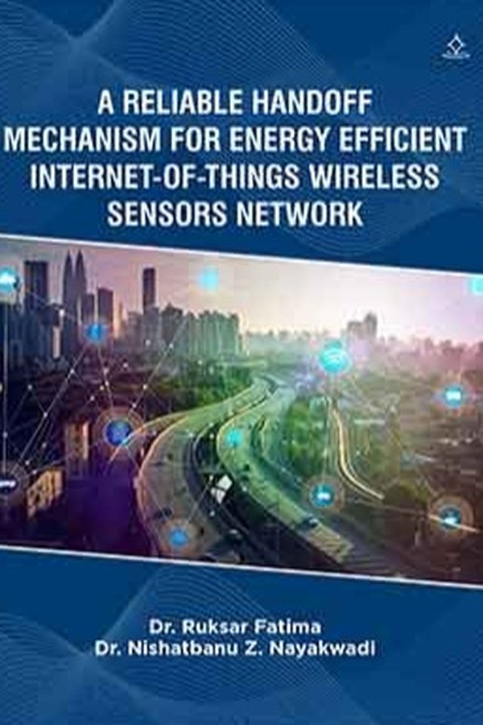
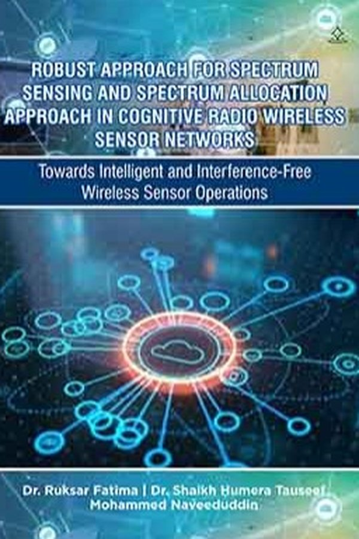
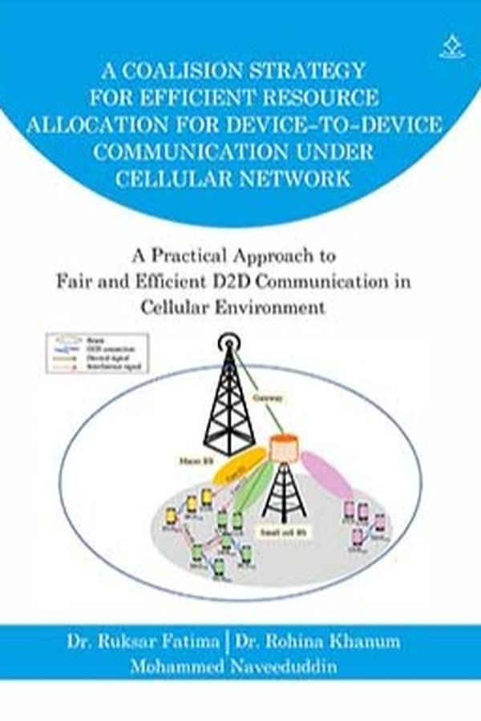
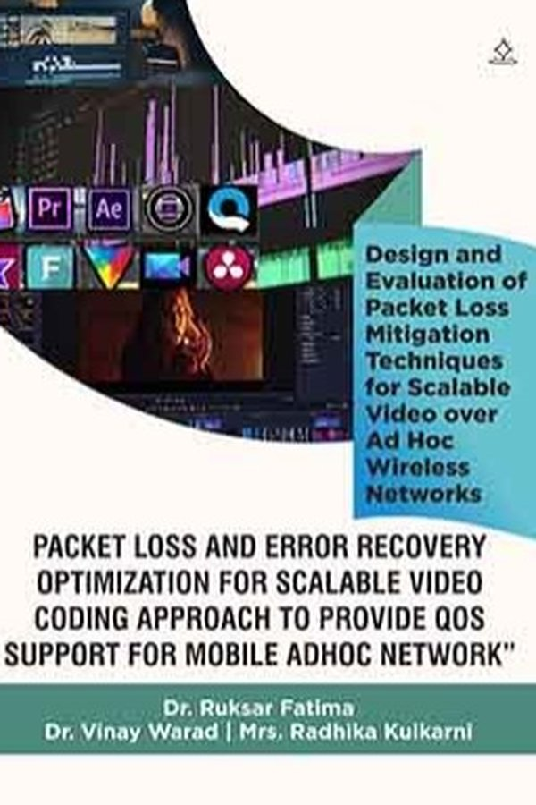
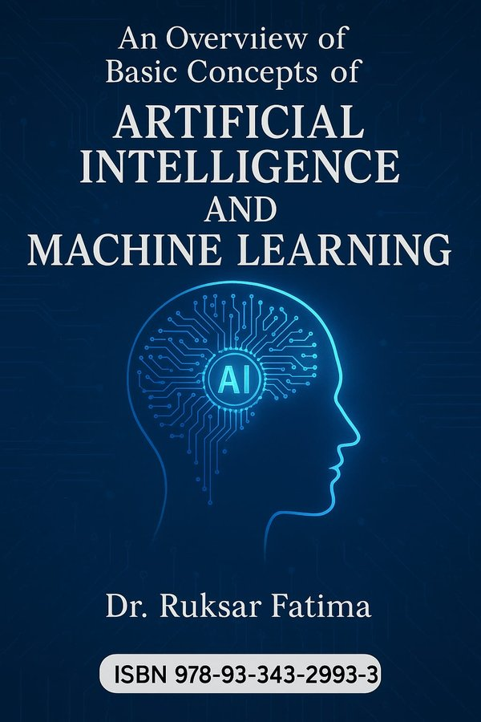
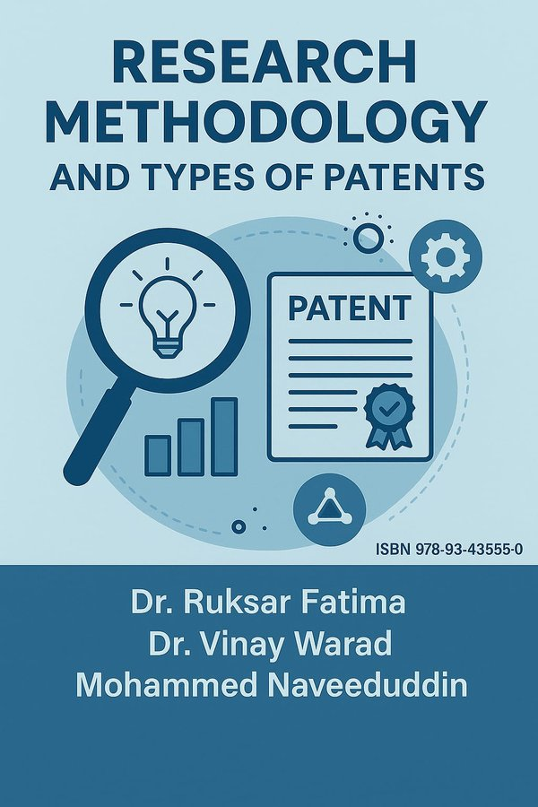
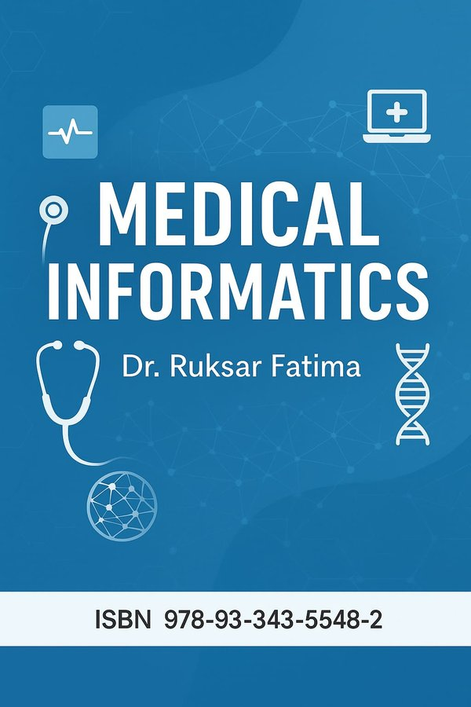
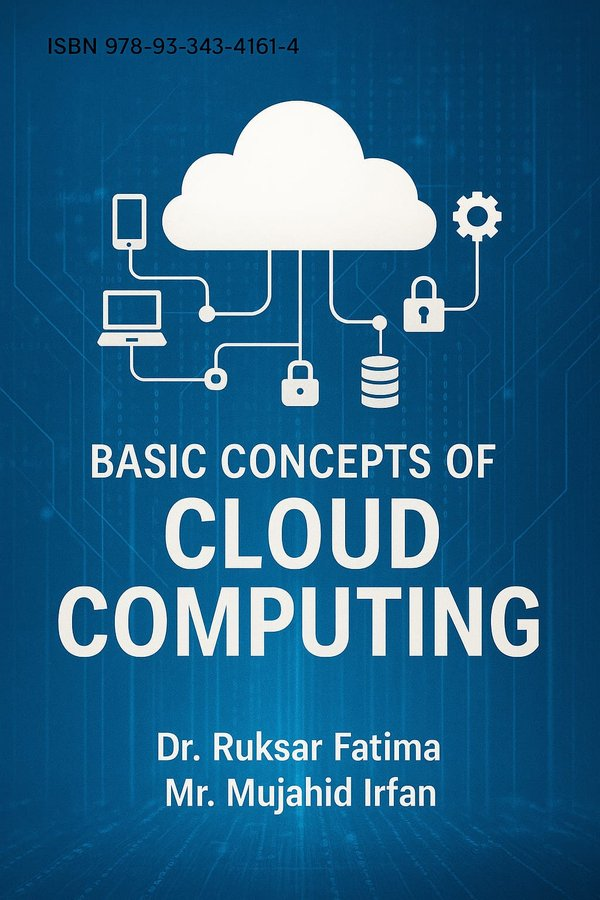
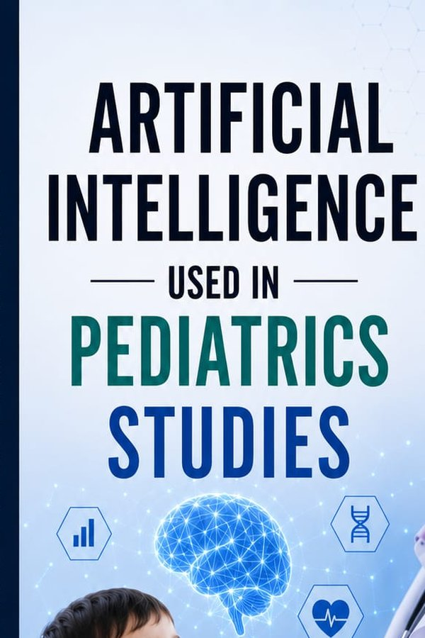

Professor, Faculty of Engineering & Technology at Khaja Bandanawaz University — over two decades advancing research in medical image processing, artificial intelligence, and engineering education.
An accomplished academic professional with over two decades of progressive experience in the education sector, holding pivotal roles at Khaja Banda Nawaz University and KBN College of Engineering.
Expertise encompasses comprehensive management of academic programs, enhancement of institutional processes, and leadership in both administrative and examination capacities. Demonstrates a robust history in developing strategic initiatives that significantly improve educational standards, operational efficiency, and student engagement.
Adept at leading cross-functional teams to achieve institutional goals and maintaining compliance with accreditation standards. Holds a Ph.D. in Computer Science and Engineering, complemented by a rich portfolio of published research that contributes to advancements in engineering and technology education.
Jawaharlal Nehru Technological University (JNTU), Hyderabad
Punjab Technical University (PTU), Jalandhar
Visvesvaraya Technological University (VTU), Belgaum
Gulbarga University, Gulbarga
Khaja Bandanawaz University
Khaja Bandanawaz University
Khaja Bandanawaz University
KBN College of Engineering (KBNCE)
KBN College of Engineering (KBNCE)
KBN College of Engineering (KBNCE)
KBN College of Engineering (KBNCE)
Over two decades of teaching across undergraduate, postgraduate, and doctoral programs in Computer Science and Engineering — designing curricula, mentoring research scholars, and pioneering interdisciplinary programs at Khaja Bandanawaz University.
Medical imaging, watermarking, segmentation, retrieval
Melanoma detection, retinopathy, biomedical signals
Deep learning, neural classifiers, federated AI
Pattern recognition, sentiment analysis, classification
Patient monitoring, embedded biomedical systems
Spectrum sensing, D2D communication, IoT WSN
Scholarly practice, academic writing, doctoral guidance
Intellectual property rights, patent drafting and filing
Melanoma, the most aggressive form of skin cancer, remains a critical challenge in early-stage detection. Current computer-aided diagnostic systems primarily focus on classifying advanced melanomas rather than identifying in situ (early-stage) cases. This thesis introduces a novel Multi-Parameter Extraction and Classification System (MPECS) to bridge this gap.
MPECS employs a structured six-phase process to extract and analyze 21 distinct parameters from Dermoscopy images, leveraging statistical methods to evaluate their diagnostic relevance. A key finding is that no single parameter conclusively detects early melanoma, necessitating a holistic analytical approach. The system integrates these parameters with a Multilayer Feed Forward Neural Network (MFNN) classifier — chosen for its efficacy in early cancer detection.
MPECS sets a new benchmark for early melanoma detection, offering clinical and technological benefits. By enabling earlier intervention, it has the potential to significantly improve patient outcomes.









Patent registered with the Indian Patent Office under the Design Act, recognized for innovation in wireless network engineering.
International Design Classification (14-2023): Recording, Telecommunication or Data Processing Equipment · Wireless Remote Controls and Radio Amplifiers
DESIGN NO. 6309794 · GRANTED 19 SEP 2023Six patent applications filed with the Indian Patent Office spanning image retrieval, video coding, secure transmission, D2D communication, retinopathy diagnostics, and deep neural network-based watermarking.
Efficient feature extraction and classification methods for content-based image retrieval systems.
APP. NO. 202341019444A · 31 MAR 2023Enhanced Quality of Service (QoS) support for mobile ad hoc networks.
APP. NO. 202341019477A · 31 MAR 2023Minimizes distortion during secure transmission of sensitive data.
APP. NO. 202341019329AImage processing techniques to diagnose diabetic retinopathy from fundus images.
APP. NO. 202211002020A · 11 FEB 2022Efficient resource allocation under cellular networks for D2D communication.
APP. NO. 202111049557A · 26 NOV 2021Beyond presenting papers, Dr. Fatima has served on 100+ international Technical & Program Committees across IEEE, SPIE, IGI Global, and university-hosted conferences in 30+ cities worldwide — from Tokyo and Singapore to Paris, Zurich, Vancouver, and Sydney.
Open to research collaborations, doctoral mentorship, editorial assignments, keynote invitations and consultancy in image processing, medical AI, and IoT — based in Gulbarga, working across India and internationally.